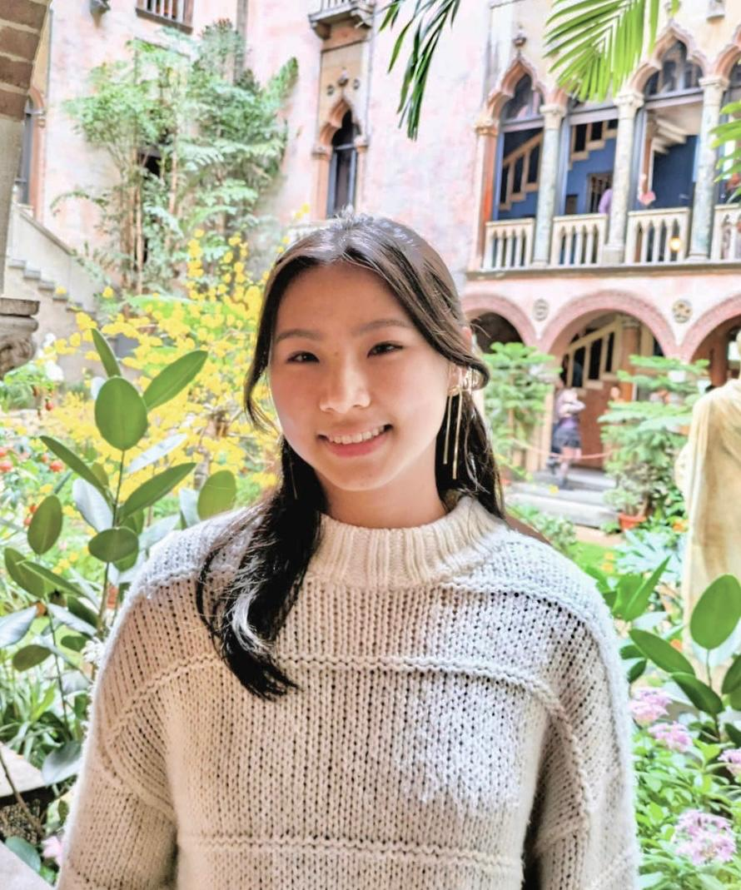

Jocelyn Zhu | jszhu@mit.edu
I am an MEng student at MIT in Computation and Cognition, having graduated with a B.S. in Spring of 2025. In the fall, I will be starting a PhD in Public Policy at the Harvard Kennedy School (Judgement and Decision Making track). Currently, I work with several labs across the Institute in Computational Social Research, including the Human Cooperation Lab and Consumer Attention Lab.
Previously, I have interned at Native Design in London as an AI Technology Intern, where I researched and developed NLP applications for consumer technology. As a Summer@EPFL Fellow, I researched task-agnostic, few-shot learning implementations for Biomedical Data at the MLBio Lab in Lausanne, Switzerland.
Current Projects
Field Experiment in the Effectiveness of LLMs in Debunking Conspiracy Theories on Social Media Platforms
with Hause Lin, David Spitz, and David Rand
User-based Value Alignment for Large Language Models
with Jakob Stenseke, Jimin Nam, and Dylan Hadfield-Menell
Political Persuasiveness of Moral Appeals and Downstream Effects on Pro-sociality
with Jimin Nam
Research
Should Language Models Vote Like Us or in Our Best Interest?
Fulay, Suyash, Zhu, Jocelyn, Roy, Deb, Bakker, Michiel.
EACL, IASEAI, 2026
Consumer Assessments of LLM Persuasion on Brand Preference
Zhu, Jocelyn, Nam, Jimin.
EACL, IASEAI, 2026
Deep transfer learning artificial intelligence accurately stages COVID-19 lung disease severity on portable chest radiographs
Zhu, Jocelyn, Shen, Beiyi, Duong, Tim, et al.
PloS one, 2020
Deep‐learning artificial intelligence analysis of clinical variables predicts mortality in COVID‐19 patients
Zhu, Jocelyn, Ge, Peilin, Jiang, Chunguo, et al.
JACEP Open, 2020
Teaching
I was previously a Teaching Assistant for Nonviolence as a Way of Life with TEJI (The Educational Justice Institute) @ MIT, facilitating class sessions and coordinating logistics for MIT and incarcerated students. I have also taught for MEET (Middle East Entrepreneurs of Tomorrow), where I mentored Israeli and Palestinian students as part of a binational educational program for Entrepreneurship and Computer Science.